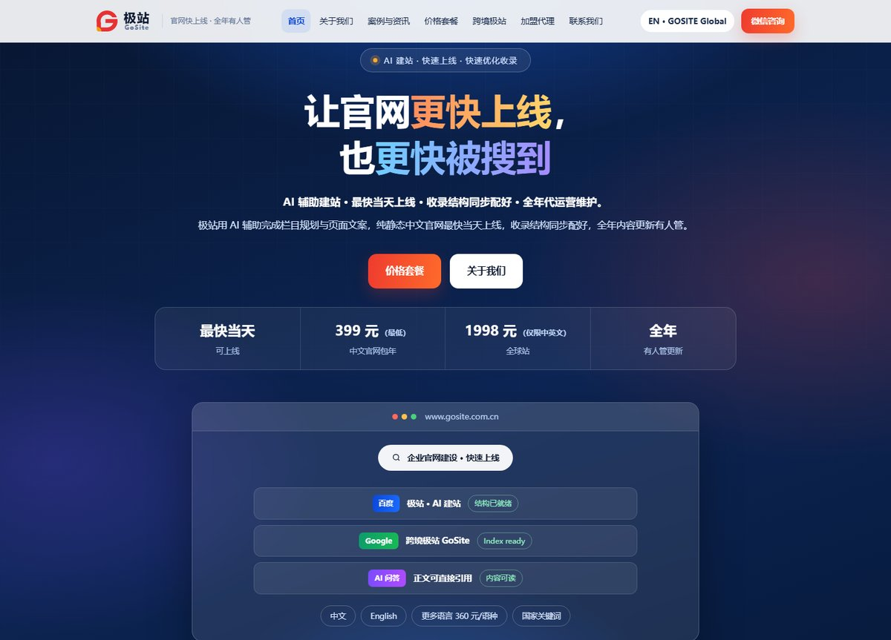
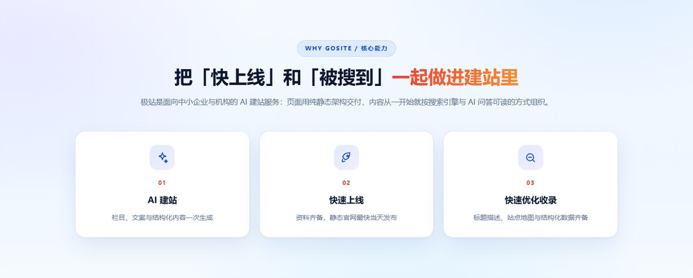
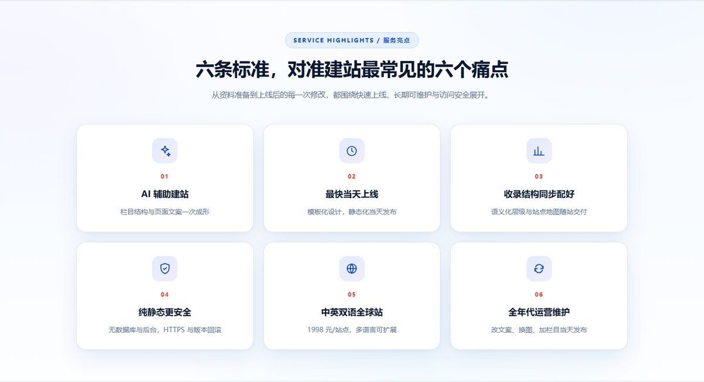
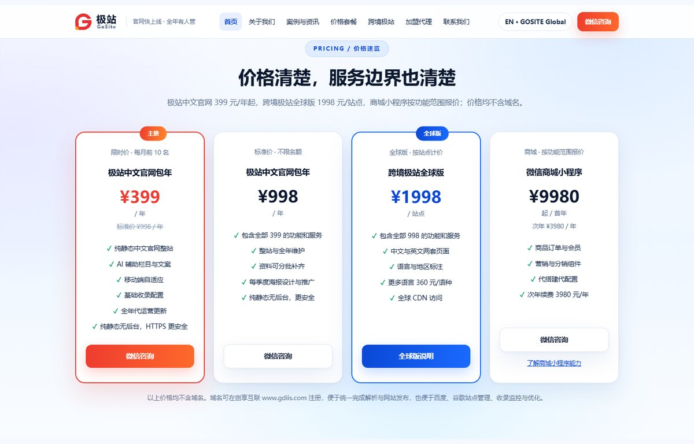
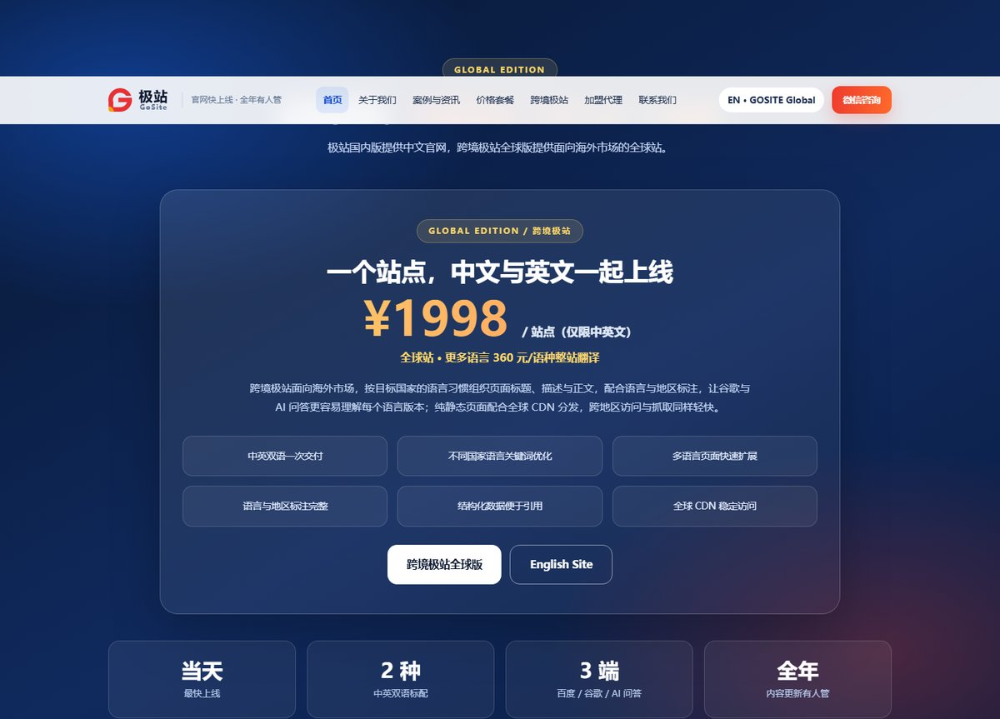
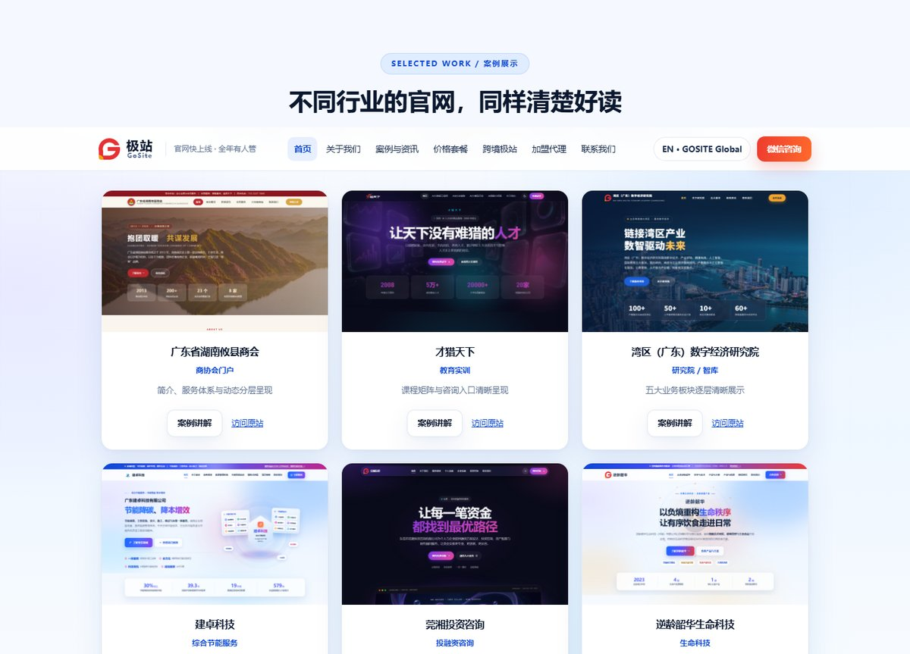

我们的官网 www.gosite.com.cn 正式上线了。极站 GoSite 是一套面向中小企业与机构的 AI 建站服务，让官网更快上线，也更快被搜到。AI 辅助完成栏目规划与页面文案，纯静态中文官网最快当天发布，收录结构随站配好，上线之后的内容更新由服务方全年承接。

我们解决的是「长期有人管」这件事
很多机构缺的并不是一个网站，而是一间长期有人管的官网。官网要真正发挥作用，通常需要同时满足几件事：栏目清楚、手机好用、能被百度与谷歌找到、也能被 AI 问答读懂，并且内容持续更新。传统定制开发周期长、维护成本高，不少中小企业与机构因此一直没有稳定的线上门面。
我们把 AI 辅助的栏目规划、页面文案与结构化内容生成，和纯静态托管放在一起，把「快速上线 + 快速优化收录 + 全年代运营」做成一项包年服务：资料齐备时中文官网最快当天上线，改稿当天发布，全年内容更新有人管。页面从一开始就按搜索引擎与 AI 问答易于理解的方式组织，而不是上线之后再补一轮优化。

三条核心能力
| 能力 | 具体做法 |
|---|---|
| AI 建站 | 栏目结构、页面文案与结构化内容一次生成 |
| 快速上线 | 模板化设计、静态化交付，资料齐备最快当天发布 |
| 快速优化收录 | 语义化标题层级、页面描述、站点地图、结构化数据、规范链接与 robots 配置随站交付 |
六条服务亮点，对准六个常见痛点
从资料准备到上线后的每一次修改，服务围绕快速上线、长期可维护与访问安全展开。
- AI 辅助建站：栏目结构与页面文案一次成形，减少反复沟通。
- 最快当天上线：标准展示型中文官网在资料齐备、栏目确认的前提下当天可发布。
- 收录结构同步配好：语义化层级与站点地图随站交付，正文按便于百度、谷歌及 AI 问答引用的方式组织。
- 纯静态更安全：页面无数据库、无后台登录，减少常见注入与爆破风险；全站 HTTPS，配合 CDN 分发，每次改动留有版本记录可快速回滚。
- 中英双语全球站：跨境极站全球版按站点计价，中英双语一次交付，更多语言可扩展。
- 全年代运营维护：改文案、换图、加栏目当天发布，栏目调整与收录配置一并由服务方接手。

价格清楚，服务边界也清楚
| 产品 | 价格 | 主要包含 |
|---|---|---|
| 极站中文官网包年 | 限时 399 元/年（每月前 10 名），标准价 998 元/年 | 纯静态中文官网整站、AI 辅助栏目与文案、移动端自适应、基础收录配置、全年代运营更新 |
| 跨境极站全球版 | 1998 元/站点 | 中文与英文两套页面、语言与地区标注、不同国家语言关键词优化、结构化数据、全球 CDN 访问 |
| 微信商城小程序 | 9980 元起/首年，次年 3980 元/年 | 商品订单与会员、营销与分销组件、代搭建代配置 |
以上价格均不含域名。998 元标准价方案支持资料分批补齐，并包含每季度海报设计与推广；全球版更多语种按 360 元/语种做整站翻译。收录时间由各平台决定，这些边界在下单前就会说明。

出海官网：一个站点，两种语言一起上线
面向海外市场的客户，由跨境极站全球版交付。页面标题、描述与正文按目标国家的语言习惯组织，配合语言与地区标注，让谷歌与 AI 问答更容易理解每个语言版本；纯静态页面配合全球 CDN 分发，跨地区访问与抓取同样轻快。中文与英文一次交付，后续可按语种扩展，结构化数据也便于被引用。

把做得好的网站拆开来看
围绕设计布局、色彩搭配、SEO 与 GEO，我们持续拆解做得好的网站：商协会门户怎样从首屏排到服务体系，转化型首页如何用色彩建立信息层级，纯静态站点为什么更容易被搜索引擎读懂。案例部分收录商协会、教育实训、研究院智库、节能科技、投融资咨询与生命科技等不同行业的官网，栏目结构各异，但都做到清晰、手机好用、后续更新方便。

当地客户，由当地服务商服务
我们也开放了服务商合作：当地客户由所在区域的服务商开发和维护，服务商信息在官网统一公布。国内预存 3000 元人民币、中国以外国家统一 500 美元，可获得 OEM 宣传网站与定期宣传海报；一年内成功服务客户 30 家以上，或选择退出合作，可申请全额退费。后期计划上线的企业名片、数字人、媒体矩阵系统，同样适用这套合作体系。
官网不用等，也不用自己管
把 AI 内容生成、纯静态托管与全年维护放在一起，是我们对「一间能用得下去的官网」给出的答案。栏目与文案由 AI 辅助成形，页面以纯静态交付，收录结构随站配好，上线之后的修改与更新由服务方接手。关于能力、价格、案例与常见问题的说明都放在 www.gosite.com.cn，欢迎了解。